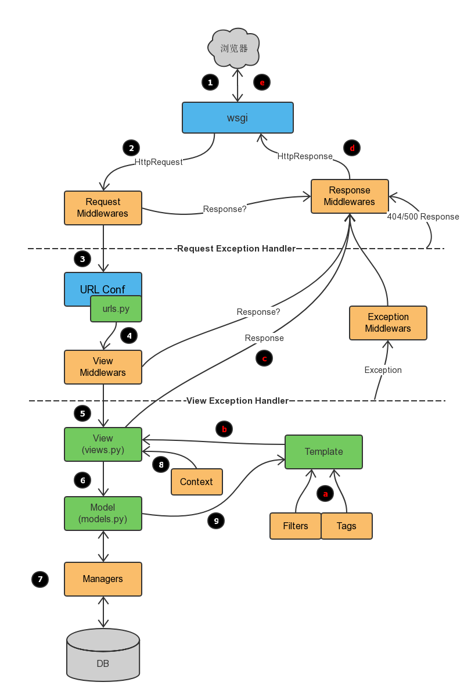

面试知识点
1. HTTP基础
1. HTTP的三次握手
参考链接: https://blog.csdn.net/qzcsu/article/details/72861891
示意图解析

- 客户端–发送带有 SYN 标志的数据包–一次握手–服务端
- 服务端–发送带有 SYN/ACK 标志的数据包–二次握手–客户端
- 客户端–发送带有带有 ACK 标志的数据包–三次握手–服务端
为什么三次握手? 三次握手的目的是建立可靠的通信信道，说到通讯，简单来说就是数据的发送与接收，而三次握手最主要的目的就是双方确认自己与对方的发送与接收是正常的。
- 第一次握手：Client 什么都不能确认；Server 确认了对方发送正常，自己接收正常。
- 第二次握手：Client 确认了：自己发送、接收正常，对方发送、接收正常；Server 确认了：自己接收正常，对方发送正常
- 第三次握手：Client 确认了：自己发送、接收正常，对方发送、接收正常；Server 确认了：自己发送、接收正常，对方发送接收正常
为什么断开要四次? 断开一个 TCP 连接则需要“四次挥手”：
- 客户端-发送一个 FIN，用来关闭客户端到服务器的数据传送
- 服务器-收到这个 FIN，它发回一 个 ACK，确认序号为收到的序号加1 。和 SYN 一样，一个 FIN 将占用一个序号
- 服务器-关闭与客户端的连接，发送一个FIN给客户端
- 客户端-发回 ACK 报文确认，并将确认序号设置为收到序号加1
2. 转发(Forward)和重定向(Redirect)
- 转发是服务器行为, 服务器访问一个url,然后将内容返回给浏览器
- 重定向是客户端(浏览器)根据服务器返回的状态吗,配合Location进行重定向
- 从数据来看, forward能够共享request的数据
- 从效率来看, forward比redirect高
- 从客户端来看, forward不能察觉
- 使用上, 一般转发用于登录后,根据用户角色转发到相应模块. 跳转用于注销登录后跳转首页或其他页面
3. 从浏览器输入url到显示页面, 整个过程会使用哪些协议?
1. DNS解析.
- 浏览器查找域名的IP地址
- DNS查找过程: 浏览器缓存,路由器缓存,DNS缓存
2. 与服务器建立TCP连接
3. 发送HTTP请求
4. 服务器处理请求并返回报文
5. 浏览器解析渲染页面
6. 链接结束
4. 为什么要使用线程池?
使用线程池的好处：
- 降低资源消耗。 通过重复利用已创建的线程降低线程创建和销毁造成的消耗。
- 提高响应速度。 当任务到达时，任务可以不需要的等到线程创建就能立即执行。
- 提高线程的可管理性。 线程是稀缺资源，如果无限制的创建，不仅会消耗系统资源，还会降低系统的稳定性，使用线程池可以进行统一的分配，调优和监控。
2. Python基础
1. 常用库
- requests
- hashlib
- demjson | json
- bs4
- lxml
- selenium
2. Python进程的内存结构
参考: https://www.jianshu.com/p/4e1c751d85f8
1. 进程分布如下:
1. text (code segment/text segment) 存放程序执行代码的一块内存区域,也包含一些只读常量.
2. data 通常用来存放程序中已初始化的全局变量数据,属于静态内存分配
3. bss (Block Started by Symbol) 通常用来存放程序中未初始化的全局变量
4. 堆(heap) 堆用于存放动态变量, 大小不固定,可动态扩张
5. 栈(stack)
3. Python的垃圾回收机制
参考： https://www.jianshu.com/p/1e375fb40506
1. Python采用Garbage collection垃圾收集机制，以`引用计数`为主,`标记-清除`和`分代收集`两种机制为辅
2. 对于`引用计数`机制,每个对象都是一个`PyObject`结构体,包含ob_refcnt作为引用计数,当ob_refcnt为0时,将被GC回收.
- √简单
- √实时性, 平摊内存回收的时间
- X维护引用计数占用资源
- X循环引用会导致永久占用
4. 小的知识点：
- Float类型高精度转低精度
# 字符串化： d = ({:0.2f}).format(f) # round内置函数 round(d, 2) 快速排序sorted
list
x = [2, 9, 100, -1] sorted(x, reverse=True) >> [100, 9, 2, -1] # 但是x不变 , reverse=True为降序 # 如果x是复杂元祖 x = [(2, 9), (100, -1)] sorted(x, reverse=True, key= lambda item: item[1]) # lambda表达式 lambda item: item[1] ## 等价 def f(item): return item[1]- dict
x = [{'a':1}, {'b', 24}, {'c':44}, {'d':64}, {'e': 5}] # 默认按key排序 sorted(x, reverse=True) # 按value排序需指定key sorted(x, reverse=True, key=lambda k: x[k])
args 和 * kwargs
- *args 接收若干个(0-N)值
# 使用 def fun(*args): for arg in args: print arg fun(2, 3) fun(*[2, 3]) # *[2, 3, 5] 等价与 2, 3, 5 **kwargs 接收若干个(0-N)key=value
# 用法 def fun(**kwargs): for key in kwargs: print(key, kwargs.get(key)) # 此时的kwargs将输入参数转成了dict fun(name='XX', age=18) fun(**{"name":"xx", "age":18}) # **{"name":"xx", "age":18} 等价与 name='XX', age=18测试
def demo(*args, **kwargs): print(args, kwargs) >>> demo(2, 3, 5, name='mm', **{"age": 8}) (2, 3, 5) {'name': 'mm', 'age': 8}5. 进程、线程和协程
- *args 接收若干个(0-N)值
6. 装饰器(Decorators)
3. django
1. 描述django一次请求的过程

- 描述
- 接收请求web服务器接收到来自客户端的请求
- 代理请求代理传给Python应用服务器(uWSGI或Gunicorn)
- 解析请求Python应用服务器根据WSGI协议解析成一个dict, 发送给Web框架
- 路由匹配Web框架初始化Handler对象, 进行路由匹配(urls.py)
- 视图函数进入url匹配的视图函数(views.py)
- 如果不涉及数据, 直接返回tmplate或Json响应
- 如果设计数据, 由Model 从数据库取数据, 填充到template后返回给视图函数, 生成响应
- 返回返回响应经中间件, 由应用服务器处理成响应response
- 处理请求response发给Web服务器
- 代理转发Web服务器将响应发回给客户端